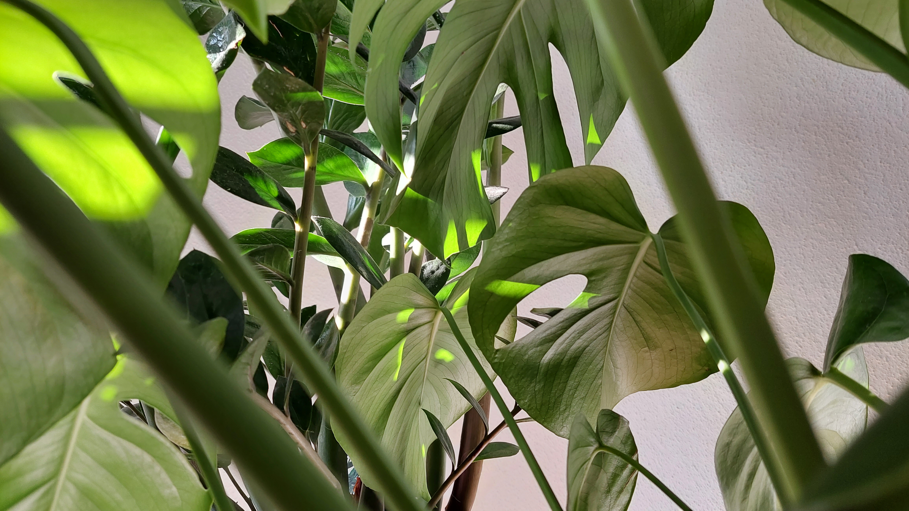

Overgewicht is een belangrijk onderwerp die steeds meer relevant wordt in onze tijd. Tegenwoordig heft ongeveer de helft van de volwassenen in Nederland overgewicht waarvan ongeveer 14% zwaar overgewicht heeft. Doordat de jeugt ook minder in beweging is dan vroeger en ongezonder eten neemt het hoeveelheid overgewicht bij kinderen ook toe. Het is daarom heel belangrijk dat we weten wat dit veroorzaakt en hoe we dit probleem op kunnen lossen zodat dit nummer niet blijft stijgen. Op onze website vind u informatie over verschillende onderwerpen binnen overgewicht.
Het doel van dit is om de mens beter te informeren in de hoop dat dit onderwerp serieus wordt genomen. 